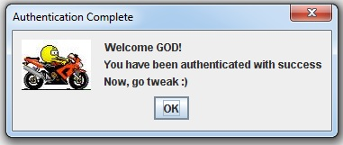

When the system is opened, most features will be unavailable for the user. The available features are the non functional, that is e.g. the about, this help program, the calculator, error reporting etc.
Login is done by entering the users initials, which are given by the system administrator. Note: if no system administrator is available and user for some reason cannot login,
please feel free to contact TeaN TALC at MeLikeFailing errorlog.
After succesfully login, the user gets notified by a standard dialog box. The illustration is shown below:

When the image has been displayed, the core features of the system has been enabled. And as we see we have the options of handling Owner, Vehicle, Order, Measurements etc. Which we will go through one by one throughout this help program. At any point, the user can decide to log out. This is done by pressing "Ctrl" and "Q" simultaniously.
This was a brief walk-through for the Login feature. In the next chapter we will take a look at the Vehicle part.